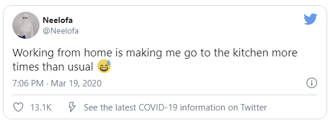
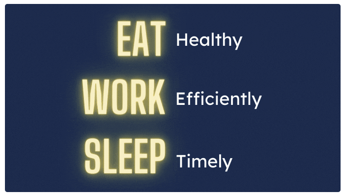

One of the perks of working from home is free access to the kitchen. As soon as it is time for breaks, you gravitate towards it to grab some snacks.
This practice does not benefit you, in any way.
Being on a healthy diet is very essential when you are a working person. Therefore, you must eat food that helps you function better instead of draining your energy.
Those extra burgers will not help you much in your proficiency.
At the office, you have access to whatever food is available in the cafeteria or the lunch you brought from home. You are restricted, but at home you are on your own.
As a result, you should keep yourself in check and be on a good diet.
Eat healthy everyday even if you are working from office, but in your limited capacity. Because, over eating might lead to sluggishness.
One of the most crucial activities which go unnoticed while working from home is your sleep pattern. It might take a toss when you work from home.
Your sleep time often gets compromised between work and binge-watching.
But maintaining a proper sleep schedule is imperative if you aim to deliver best results. It keeps your head clear.
Save your binge-watching plans for the weekend. And get started with your healthy routine.
Additionally, when you are working from home, you might try to get some extra sleep. But it doesn’t add much. Resist the temptation to oversleep and start your day early.
When your work-life is demanding, it keeps you awake at odd hours, even when you are working from home. Try to take short naps if that is the case.
So, all you need is the right food to keep your energy high, and good sleep to rejuvenate your body and mind.
Sufficient sleep, exercise, healthy food, friendship, and peace of mind are necessities, not luxuries.
~Mark Halperin